Hartree-Fock (HF) Method¶
Derivation¶
The interacting Hamiltonian is (see the general QFT notes for derivation):
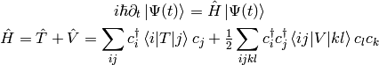
We would like to minimize the energy 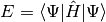 using the following basis for electrons:
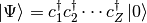
We express the energy  in this basis:
in this basis:

We minimize it with the constrain 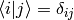:
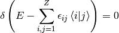
We obtain:
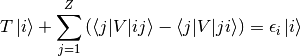
in the  -representation:
-representation:
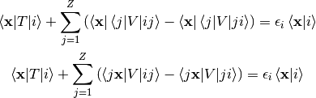
And writing the individual terms explicitly:
![\braket{{\bf x} | i} = \psi_i({\bf x})
\braket{{\bf x} | T | i}
= \left(-\half \nabla^2 -{Z\over |{\bf x}|}\right)\psi_i({\bf x})
\braket{j{\bf x}|V|ij}
= \int \psi_j^*({\bf y}){1\over|{\bf x}-{\bf y}|}
\psi_i({\bf x})\psi_j({\bf y}) \d^3 y
= \int {|\psi_j({\bf y})|^2\over|{\bf x}-{\bf y}|}
\d^3 y\,\,\psi_i({\bf x})
\braket{j{\bf x}|V|ji}
= \int \psi_j^*({\bf y}){1\over|{\bf x}-{\bf y}|}
\psi_j({\bf x})\psi_i({\bf y}) \d^3 y
= \int {\psi_i({\bf y})\psi_j^*({\bf y})\over|{\bf x}-{\bf y}|}
\d^3 y\,\,\psi_j({\bf x})](../../_images/math/16a3022e56278f21fb1753943d9276f2a03a9ef6.png)
we get the Hartree-Fock equations:

Let’s introduce the number density 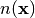, Hartree potential 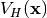 and nonlocal exchange potential 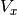 with its kernel 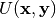:
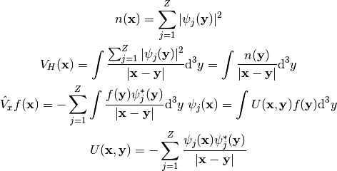
then we can write the HF equations as:
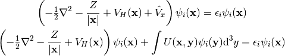
The Hartree potential can be calculated by solving the Poisson equation:
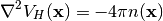
where:
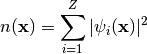
The application of the exchange potential 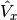 on any function
 can be calculated by:
can be calculated by:
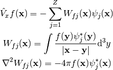
Exchange Integral in Spherical Symmetry¶
Let’s calculate the exchange integral
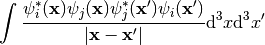
for the particular choice of the functions  :
:
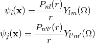
We use multipole expansion:
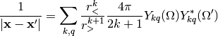
And we get:
![\int {\psi_i^*({\bf x})\psi_j({\bf x})\psi_j^*({\bf x}')\psi_i({\bf x}')
\over |{\bf x} - {\bf x}'|} \d^3 x \d^3 x' =
= \int
{P_{nl}(r)\over r} Y_{lm}^*(\Omega)
{P_{n'l'}(r)\over r} Y_{l'm'}(\Omega)
{P_{n'l'}(r')\over r'} Y_{l'm'}^*(\Omega')
{P_{nl}(r')\over r'} Y_{lm}(\Omega')
\sum_{k,q}{r_{<}^k\over r_{>}^{k+1}}
{4\pi\over 2k+1}Y_{kq}(\Omega)Y_{kq}^*(\Omega')
r^2 r'^2 \d r \d r' \d \Omega \d \Omega' =
=
\sum_{k,q}
\int
Y_{lm}^*(\Omega)
Y_{l'm'}(\Omega)
Y_{kq}(\Omega)
\d \Omega
\int
Y_{l'm'}^*(\Omega')
Y_{lm}(\Omega')
Y_{kq}^*(\Omega')
\d \Omega'
\int {r_{<}^k\over r_{>}^{k+1}}
{4\pi\over 2k+1}
P_{nl}(r)
P_{n'l'}(r)
P_{n'l'}(r')
P_{nl}(r')
\d r \d r' =
=
\sum_{k,q}
\int
Y_{lm}^*(\Omega)
Y_{l'm'}(\Omega)
Y_{kq}(\Omega)
\d \Omega
(-1)^{m+m'+q}
\int
Y_{l',-m'}(\Omega')
Y_{l,-m}^*(\Omega')
Y_{k,-q}(\Omega')
\d \Omega'
\int {r_{<}^k\over r_{>}^{k+1}}
{4\pi\over 2k+1}
P_{nl}(r)
P_{n'l'}(r)
P_{n'l'}(r')
P_{nl}(r')
\d r \d r' =
=
\sum_{k}
c^k(l, m, l', m') \sqrt{2k+1\over 4\pi}
(-1)^{m+m'+m-m'}
c^k(l, -m, l', -m') \sqrt{2k+1\over 4\pi}
\int {r_{<}^k\over r_{>}^{k+1}}
{4\pi\over 2k+1}
P_{nl}(r)
P_{n'l'}(r)
P_{n'l'}(r')
P_{nl}(r')
\d r \d r' =
=
\sum_{k}
c^k(l, m, l', m')
c^k(l, -m, l', -m')
\int {r_{<}^k\over r_{>}^{k+1}}
P_{nl}(r)
P_{n'l'}(r)
P_{n'l'}(r')
P_{nl}(r')
\d r \d r' =
=
\sum_{k}
c^k(l, m, l', m')
c^k(l, m, l', m')
\int {r_{<}^k\over r_{>}^{k+1}}
P_{nl}(r)
P_{n'l'}(r)
P_{n'l'}(r')
P_{nl}(r')
\d r \d r' =
=
\sum_{k=|l-l'|}^{l+l'}
\left(
c^k(l, m, l', m')
\right)^2
\int {r_{<}^k\over r_{>}^{k+1}}
P_{nl}(r)
P_{n'l'}(r)
P_{n'l'}(r')
P_{nl}(r')
\d r \d r'](../../_images/math/8c670c3d5ed2c91595ef65ae80aa6491e7791588.png)
Nonlocal Exchange Potential in Spherical Symmetry¶
Similarly, we calculate:
![\sum_{j=1}^Z\int {\psi_i({\bf x'})\psi_j^*({\bf x'})\over|{\bf x}-{\bf x'}|}
\d^3 x'\,\,\psi_j({\bf x}) =
= \sum_{n'l'm'}\sum_{k,q}\int
{P_{nl}(r')\over r'} Y_{lm}(\Omega')
{P_{n'l'}(r')\over r'} Y_{l'm'}^*(\Omega')
{P_{n'l'}(r)\over r} Y_{l'm'}(\Omega)
{r_{<}^k\over r_{>}^{k+1}}
{4\pi\over 2k+1}Y_{kq}(\Omega)Y_{kq}^*(\Omega')
r'^2 \d r' \d \Omega' =
= \sum_{n'l'm'}\sum_{k,q}
{P_{n'l'}(r)\over r}
{4\pi\over 2k+1}
\int Y_{lm}(\Omega') Y_{l'm'}^*(\Omega') Y_{kq}^*(\Omega')
Y_{l'm'}(\Omega)
Y_{kq}(\Omega)
\d \Omega'
\int
{r_{<}^k\over r_{>}^{k+1}}
P_{nl}(r')
P_{n'l'}(r')
\d r' =
= \sum_{n'l'}\sum_{k}
{P_{n'l'}(r)\over r}
{4\pi\over 2k+1}
{2k+1\over 4\pi}
\sqrt{2l'+1\over 2l+1} c^k(l', 0, l, 0)
Y_{lm}(\Omega)
\int
{r_{<}^k\over r_{>}^{k+1}}
P_{nl}(r')
P_{n'l'}(r')
\d r' =
=
{Y_{lm}(\Omega)\over r}
\sum_{n'l'}\sum_{k=|l-l'|}^{k=l+l'}
\sqrt{2l'+1\over 2l+1} c^k(l', 0, l, 0)
\int
{r_{<}^k\over r_{>}^{k+1}}
P_{nl}(r')
P_{n'l'}(r')
\d r'\,
P_{n'l'}(r)](../../_images/math/71b3f146679a3a648f02bda49c9e9287f0728adb.png)
Functions with different spins don’t contribute to the sum, so there is no multiplication by 2. We assumed closed shells atoms (we summed over all 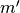 in the above).
Where we used the result of the integral in Example VI. Note that:
(1)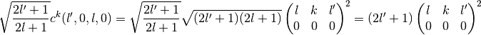
Occupation Numbers¶
We have a sum over  electron states like this:
electron states like this:
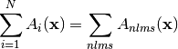
where 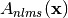 are some functions that depend on the state numbers
(for example squares of the wavefunctions). Then there are two options —
either there is a way to sum over the  and 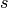 degrees of freedom, so that
the sum can be written exactly as:
and 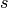 degrees of freedom, so that
the sum can be written exactly as:
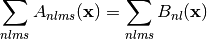
where 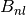 (that don’t depend on and ) will in general be different
to 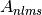, but the sum will be the same. Or we have to approximate the sum
(for example by averaging over the angles, or in some other way) as:
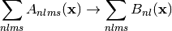
In either case, the occupation numbers 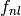 are simply the number of times
the functions 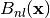 appear in the sum for the given  and 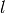:
and 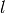:
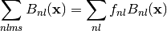
So for closed shells atoms, it is always:
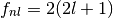
because there are two spins, and 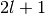 possibilities for , for open shell
atoms, is anything between  and .
and .
Example I¶
As an example, let’s say that after some calculation for closed shell systems we get exactly:
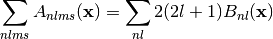
Then because there are exactly 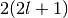 states in the 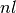 shell, we write the above as:
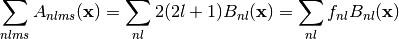
Then we do similar calculation for the open shell system, and we have to use some approximations to get the following formula, where the happen to be exactly the same as for the closed shell system:
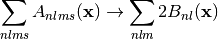
Then we denote by the number of electrons in the shell (at least one of them will be open, for which we have 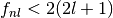), and we can write the above as:
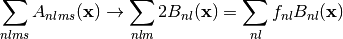
Example II¶
The usual chemical occupation numbers for the Uranium atom are:
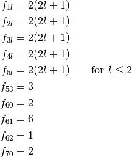
So the  , 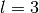 and 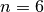, 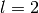 shells are open, all others are closed.
By summing all these , we get 92 states as expected:
, 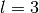 and 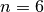, 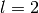 shells are open, all others are closed.
By summing all these , we get 92 states as expected:
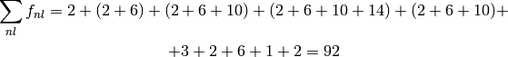
Code:
def f_nl(n, l):
if n < 5 or (n == 5 and l <= 2):
return 2*(2*l+1)
else:
d = {
(5, 3): 3,
(6, 0): 2,
(6, 1): 6,
(6, 2): 1,
(7, 0): 2,
}
if (n, l) in d:
return d[n, l]
else:
return 0
print "Sum f_nl =", sum([f_nl(n, l) for n in range(8) for l in range(n)])
prints:
Sum f_nl = 92
Hartree Potential in Spherical Symmetry¶
For both open and closed shell atoms we get exactly:

For closed shell atoms we continue simplifying:
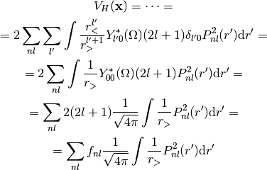
For open shell atoms we have to use the central field approximation, we average the integral for 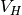 over the angles:
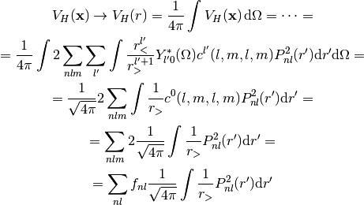
We got the same expression for both open shell (with central field approximation) and closed shell (no approximation) atoms. The radial charge density is:
So we got:
This is equivalent to solving the following radial Poisson equation:

Radial Hartre-Fock Equations¶
Using the above integrals, the HF equations become:
or using (1):
This can be written as:
with:
FEM¶
The weak formulation is ():

The radial double integral can be done in the following way:
where:

where:
Now we differentiate :
Also , so we get the following set of differential equations with boundary conditions:
Expressing from the first equation:
and substituting into the second equation we get:
With boundary condition on the left:
and on the right:
so for :